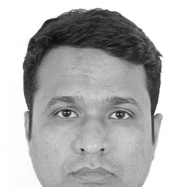

Back to Marketing City
APJC WTG Marketing
Meet the APJC marketing team, explore its regional focus areas, and find the right person to connect with.
Leadership support
 Kendys CarrizoExecutive AssistantFTE
Kendys CarrizoExecutive AssistantFTE Savannah OberChief of StaffFTE
Savannah OberChief of StaffFTEFocus areas
Regional Product & Solutions Marketing
India Marketing & Demand Centre

Srisha PermudeIndia Marketing and Demand Centre Manager · APJCFTEDemand generation & operations
Japan Marketing
ANZ Marketing
Asia Field Marketing
No people match that search.